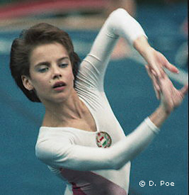

Henrietta Onodi (HUN)
1989 European UB Champion
1992 World V Champion
1992 Olympic V Champion

Medal Total
Olympic Games: 1
Gold, 1 Silver
World Championships: 1 Gold, 2
Silver
European Championships: 1 Gold, 3
Bronze
World Cup: 1 Gold, 1
Silver, 2 Bronze
Competition Results
1985
FTC Cup (Youth Division): 1st UB, 1st B, 1st FX
Pioneer Summer Olympics: 3rd B
1986
Avignon International: 3rd AA
Bekescsaba Elore Spartacus-Olso Turnforening: 1st Team, 1st AA
Jr. BUL-HUN: 2nd Team, 4th AA
Jr. European Championships: 12th AA, 4th B, 7th FX
Jr. Friendship Tournament (Druzhba): 5th Team, 11th AA, 7th UB, 8th FX
Kosice International: 17th AA
Kraft International: 3rd AA, 2nd V, 2nd UB, 2nd FX
Pioneer Summer Olympics: 1st AA
1987
American Cup: 7th AA
Athens International: 8th AA, 1st UB
Intl. Mixed Pairs: 15th Team
Jr. Friendship Tournament (Druzhba): 4th Team, 10th AA, 3rd UB, 6th B, 7th
FX
Jr. HUN-FRG: 1st Team, 1st AA
Kosice International: 3rd AA, 2nd V, 2nd B, 3rd FX, 6th UB
1988
Jr. European Championships: 8th AA, 2nd UB, 4th B, 6th V
Jr. Friendship Tournament (Druzhba): 4th Team, 7th AA, 3rd UB, 6th B, 6th
FX
Hungarian Masters: 1st AA, 1st UB, 1st B, 1st FX, 2nd V
Mezobank Cup: 1st Team
1989
American Cup: 3rd AA
DTB Cup: 1st AA, 1st FX, 2nd V, 2nd UB, 4th B
European Championships: 5th AA, 1st UB, 3rd FX, 5th B, 8th V
Gander Memorial: 2nd AA
GBR-HUN Dual Meet: 1st Team, 1st AA
Hungarian Championships: 1st AA, 1st V, 1st UB, 1st B, 1st FX
Hungarian High School Championships: 2nd AA, 1st UB, 1st B
Hungarian International: 1st AA
Hungarian Masters: 1st AA
Intl. Mixed Pairs: 5th Team
World Championships: 9th Team, 19th AA, 5th B
1990
Blume Memorial: 7th AA
Bolzano Grand Prix: 1st AA
Chunichi Cup: 3rd AA, 2nd V, 2nd B, 3rd UB, 5th FX
Cottbus International: 1st V, 1st FX, 3rd UB, 7th B
DTB Cup: 1st AA, 1st V, 1st FX, 2nd UB, 6th B
European Championships: 3rd AA, 3rd FX, 8th UB, 8th B
French International: 8th AA
Goodwill Games: 3rd AA, 4th V, 4th FX, 5th UB, 7th B
Hungarian Championships: 1st AA
Hungarian Masters: 1st AA
Tokyo Cup: 2nd V, 3rd FX
World Cup: 3rd AA, 1st V, 2nd FX, 3rd UB, 8th
B
1991
Blume Memorial: 4th AA, 2nd V, 2nd FX, 4th UB, 4th B
Chunichi Cup: 1st AA, 1st UB, 1st FX, 2nd V, 3rd B
Galvan Memorial: 1st AA
Hapoel Games: 1st AA
Hungarian Championships: 1st AA, 1st V, 1st UB, 1st B, 1st fX
Hungarian International: 1st AA, 1st UB, 1st B, 1st FX
Hungarian Masters: 1st AA
HUN-ISR Dual Meet: 1st Team, 1st AA
Tokyo Cup: 1st FX, 2nd UB
World Championships: 8th Team, 31st AA, 2nd V, 4th UB, 7th UB, 8th
FX
1992
American Cup: 2nd AA
Cottbus International: 1st AA, 1st V, 1st FX, 2nd B, 4th UB
FRA-HUN Dual Meet: 1st AA
Hungarian Championships: 1st AA
Hungarian International: 1st AA, 1st V, 1st UB, 1st B, 1st FX
HUN-ROM Dual Meet: 1st AA
Intl. Mixed Pairs: 8th Team
Olympic Games: 6th Team, 8th AA, 1st V, 2nd FX
World Championships (Paris): 1st V, 2nd FX
1993
Hungarian International: 1st V, 1st UB, 1st B, 1st FX
Subaru World Open: 4th AA
1996
Olympic Games: 9th Team
This page was created on September
28, 2002 and was last updated on February 15, 2021.
© Gymn Forum